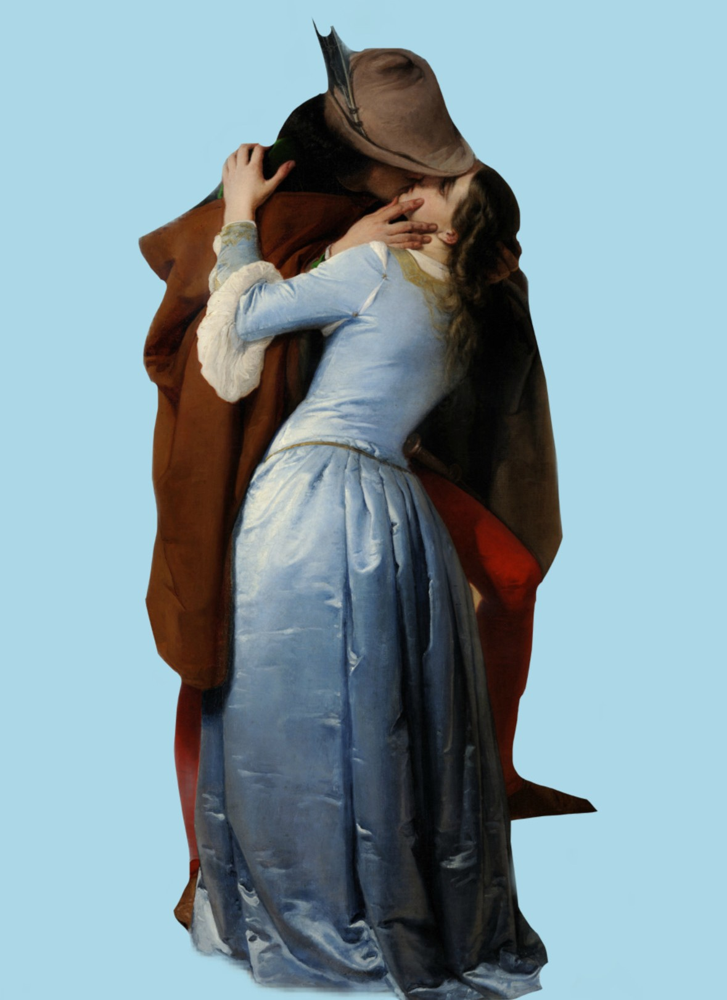
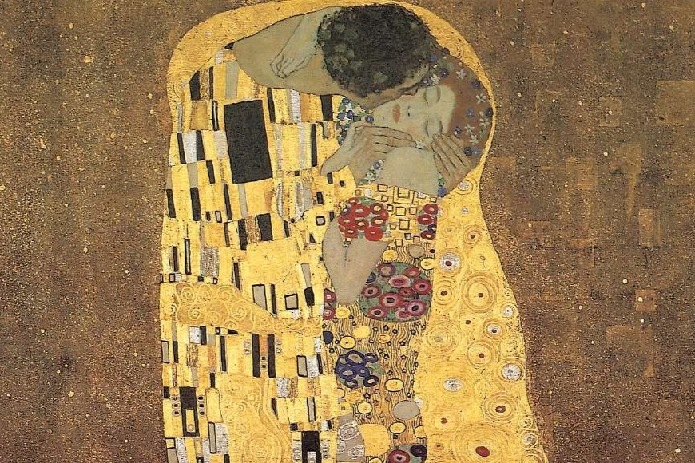
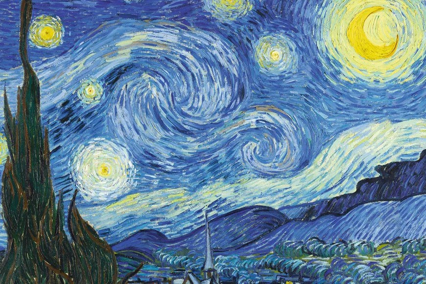
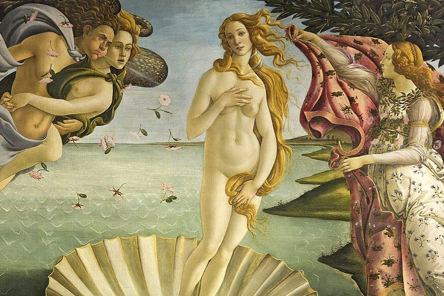
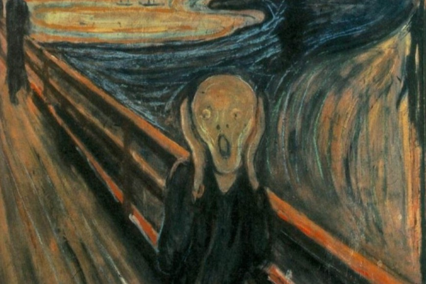
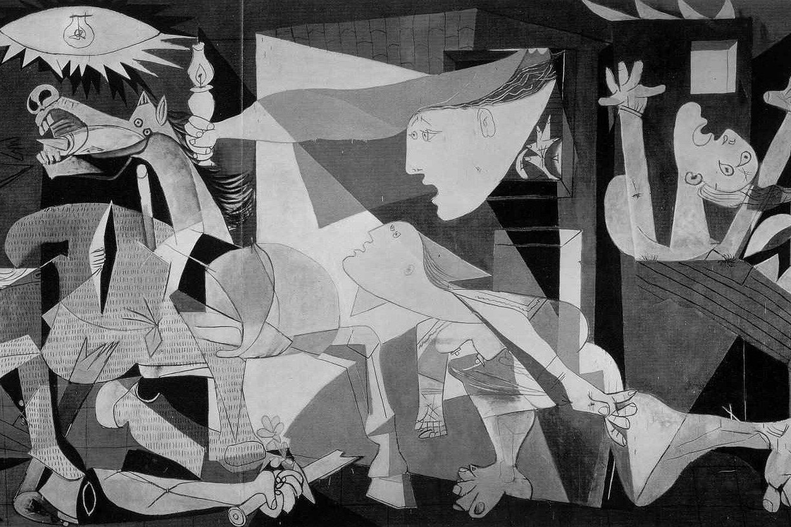
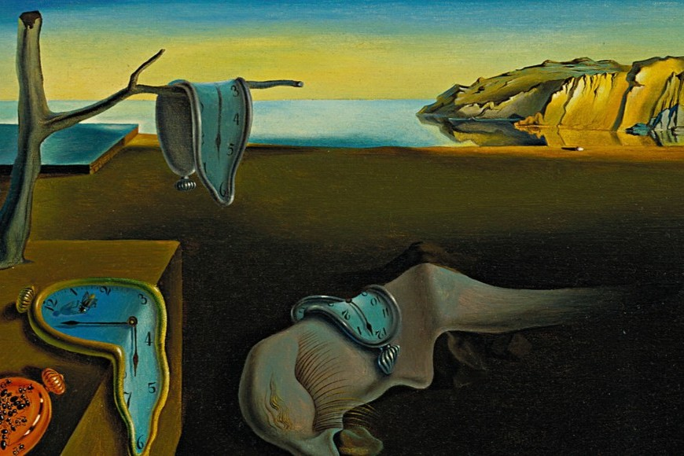

L'arte mi affascina sin da quando sono piccola. Ricordo ancora le ore passate a scarabocchiare su ogni foglio che trovavo, cercando di dare forma alle immagini che avevo in testa. Con il tempo, ho capito che l'arte non è solo disegno o pittura, ma un linguaggio universale capace di esprimere emozioni, raccontare storie e farci vedere il mondo con occhi diversi. E' un rifugio, un mezzo di esplorazione e, a volte, un modo per dare voce a ciò che le parole non riescono a spiegare. L'arte è ovunque, nei dettagli più piccoli e nei gesti più semplici: nel modo in cui la luce entra dalla finestra o nelle emozioni di uno sguardo. E' una presenza costante, capace di fermare il tempo in un istante eterno. Per me l'arte è questo: un viaggio infinito tra colori, forme e sensazioni.
Qualcosa in più su di me e sull'architettura!!!Da come si è capito, l'arte ha sempre avuto un posto speciale nella mia vita. Alcuni dipinti mi colpiscono per la loro bellezza, altri per il messaggio che trasmettono, altri ancora per il mistero che li avvolge. Amo le opere che suscitano emozioni, che raccontano storie e che lasciano spazio all'interpretazione personale. Ecco alcuni dei quadri che io definisco "i miei preferiti" da tantissimo tempo:






L'immagine che si vede a destra, rappresenta un altro dei miei quadri preferiti: Il Bacio di Hayez. Quello che amo di più è il modo in cui Hayez ha reso la passione dei due protagonisti, con il gesto avvolgente del bacio e il gioco di luci e ombre. Il dipinto raffigura un uomo e una donna avvolti in un bacio intenso e passionale. Lui vestito, con abiti medievali, si piega su di lei con trasporto, mentre la donna si lascia andare al gesto con dolcezza e desiderio. La particolarità è non sapere minimante chi sono i due e il perchè lui sembra sul punto di andarsene. Tuttavia, il dipinto non rappresenta solo un amore privato ma, l'ambientazione e gli abiti evocano un contesto storico, che molti collegano al Risorgimento.
Dovremmo sapere che l'arte si esprime attraverso diverse tecniche, che sono il cuore della creatività: attraverso esse, gli artisti danno vita alle loro visioni, trasformando idee ed emozioni in opere concrete. Ogni tecnica ha una storia, una particolarità e un effetto unico sulla percezione dell'opera. Dalla delicatezza dell'acquerello alla forza espressiva della pittura ad olio, dalla precisione dell'incisione alla tridimensionalità della scultura, ogni metodo offre possibilità infinite di espressione. Di seguito, in una tabella, tutte le tecniche utilizzate nel corso dell'arte:
| TECNICA | MATERIALI USATI | CARATTERISTICHE | ESEMPI FAMOSI |
| AFFRESCO | Pigmenti naturali su intonaco fresco | Lunga durata, colori intensi | "La Cappella Sistina" di Michelangelo |
| OLIO SU TELA | Oli e pigmenti su tela di lino o cotone | Lavorabile a lungo, colori brillanti | "La Gioconda" di Leonardo da Vinci |
| ACQUERELLO | Pigmenti diluiti in acqua su carta | Effetti trasparenti, leggerezza | "I gigli d'acqua" di Monet |
| SCULTURA IN MARMO | Marmo bianco o colorato | Eleganza, resistenza nel tempo | "David" di Michelangelo |